Telepítés:
1. lépés: Telepítő nyelvének, idő és pénznem és billenytyűzet bevitel beállítása
| 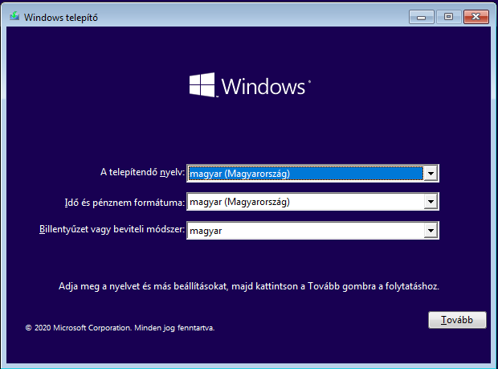 |
|---|
2. lépés: Ha esetleg van érvényes Windows kulcsod akkor azt itt már most megtudod adni. Ha nincs vagy esetleg később aktiválnád a rendszert akkor csak menj a 'nincs termékkulcsom' gombra
| 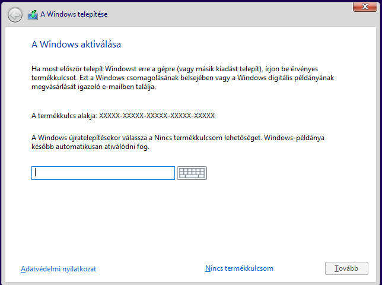 |
|---|
3. lépés: Viszont, amennyiben ha nincs termékkulcsunk akkor a következő windows verziók közül választhatunk.
| 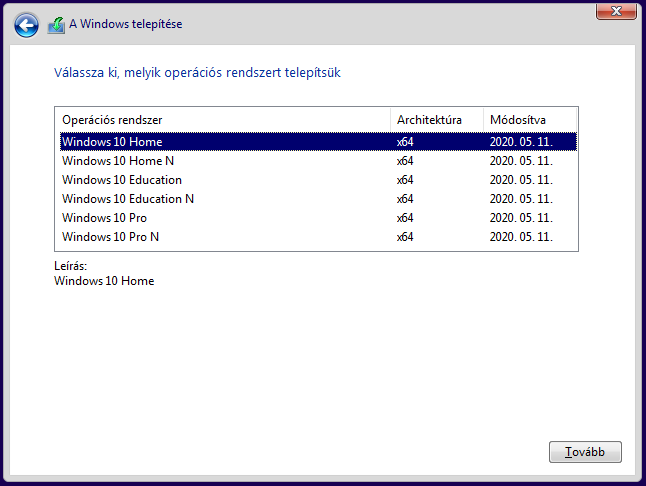 |
|---|
4. lépés: A következő szöveg a szerződés feltételeket írja le amit a (kötelező) "elfogadom a licencefeltételeket" gomb megnyomásával elfogadod az operációs rendszer általános szerződési feltételeit.
| 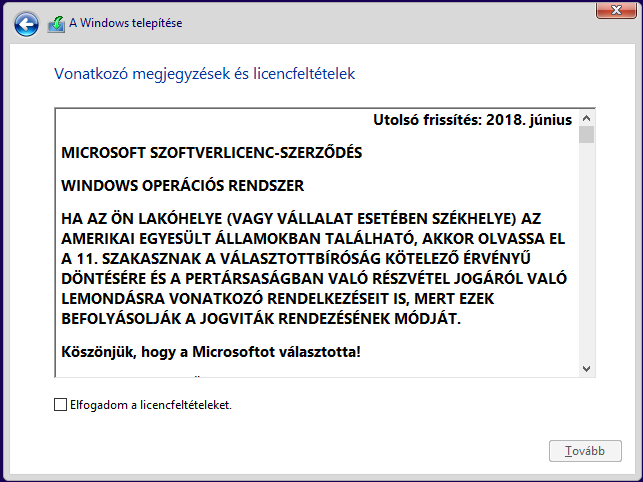 |
|---|
5. lépés: Telepítés tipus kiválasztása.
Frissítés opció menete a fájlok megtartásával folytatódik. Ez csak
akkor lehet neked szükséges ha egy régebbi opercáiós rendszerről
frissítesz jelenleg egy újabb verzióra és megtartanál minden fájlt ami
a gépeden van.
Egyéni opció az teljesen letísztítja a meghajtóid. Ezt az opciót akkor
válaszd hogyha egy teljesen letisztult gépen szeretnéd kezdeni
folytatni a további munkálataid.
| 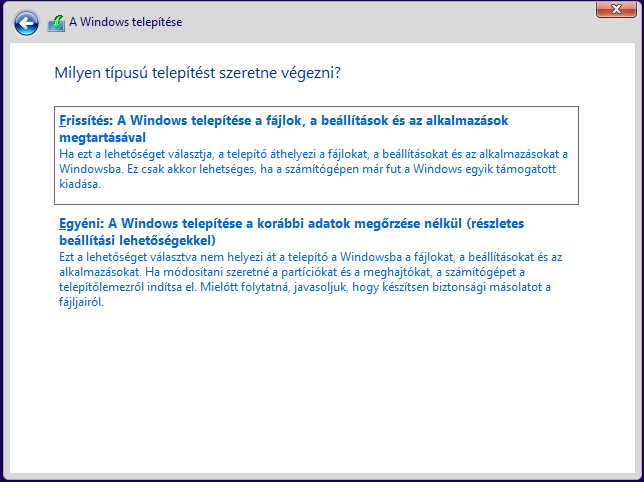 |
|---|
6. lépés: Az operációs rendszer telepítésének helye megadása. Ez több meghajtó esetén lehet fontos!
| 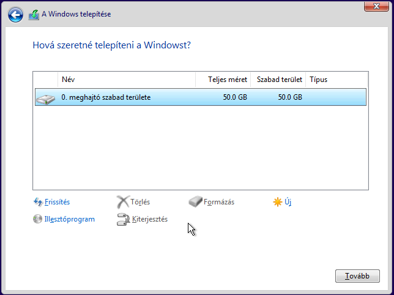 |
|---|
7. lépés: Várakozás. Jelenleg az operációs rendszer telepszik ami kb. 5perc, de ez a vasadtól függ, hogy milyen gyors.
| 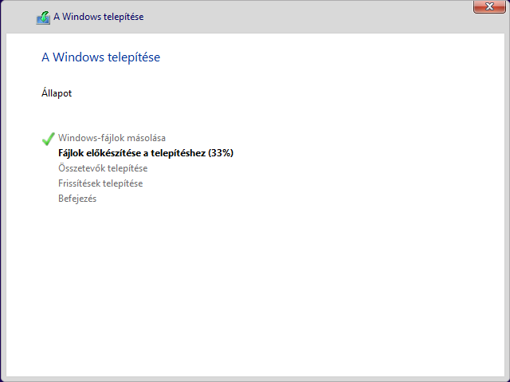 |
|---|
8. lépés: Következő lépés a jelenlegi régiód megadása.
| 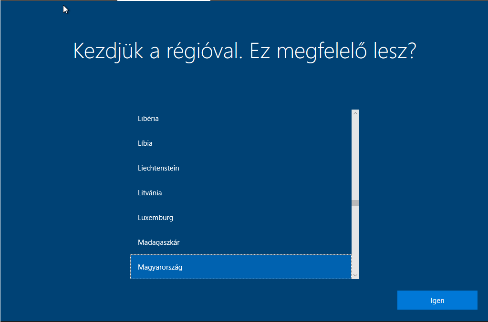 |
|---|
9. lépés: Várakozás. Jelenleg az operációs rendszer telepszik ami kb. 5perc, de ez a vasadtól függ, hogy milyen gyors.
| 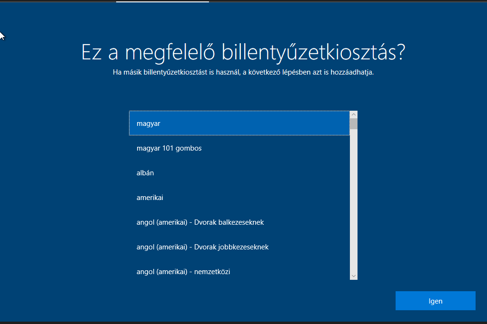 |
|---|
10. lépés: Ha esetleg van egy Microsoft fiokod azt itt hozátudod adni. Amennyiben nincs, csak nyomj a tovább gombra.
| 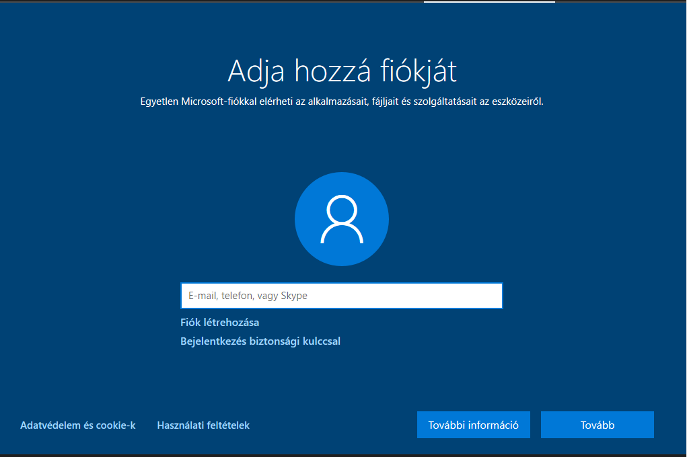 |
|---|
Gratulálunk! Sikeresen telepítettél egy windows 10-es opercációs rendszert! Ha minden jól ment, akkor egy ehez hasonlót kéne látnod:
| 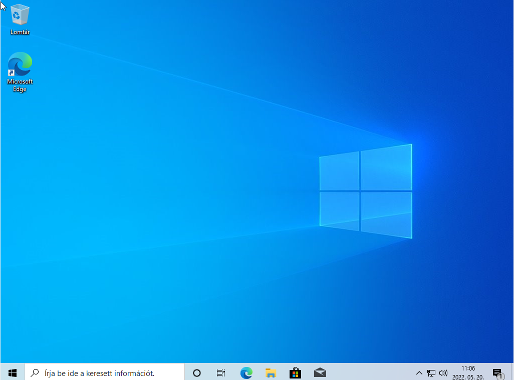 |
|---|
CMD fontosabb parancsai
Op rendszerrel kapcsolatos parancsok:
- shutdown /s - leállítás
- shutdown /r - újraindítás
- systeminfo - rendszer információk
- hostname - számítógép átnevezése
- logoff - kijelentkezés
- date - dátum megjelenítése vagy beállítása
- time - rendszer dátum megjelenítése vagy beállítása
- sdclt - biztonsági mentés és visszaállítása
- cd - Könyvtár változtatása
Fájlal kapcsolatos parancsok:
- echo - tartományok létrehozása
- rename - fájlok átnevezése
- dir - könyvtárban lévő fájlok megjelenítése
- ftype - a fáljkiterjesztés megjelenítése vagy módosítása
- mkdir - könyvtár létrehozása
- del - fájl(ok) törlése
- rmdir - üres könyvtár törlése
- comp - fájlok összehasonlítása
- tree - könytárak egymáshoz viszonyított elhelyezkedése
- move - fájlok áthelyezése
Hálózattal kapcsolatos parancsok
- ipconfig - ip konfigurációk megetekintése
- ping - egy szerver ping-elése
- tracert - útvonalkeresés
Ha bármelyik parancsnak a szintaktikájában nem lennél biztos akkor akkor írj utána egy '/?'-et (pl: move /?)